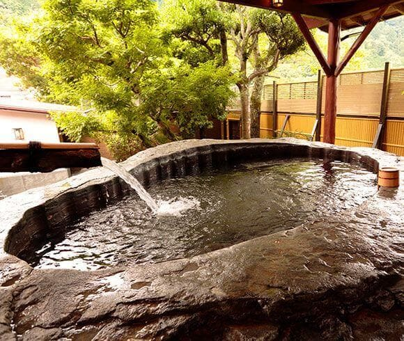
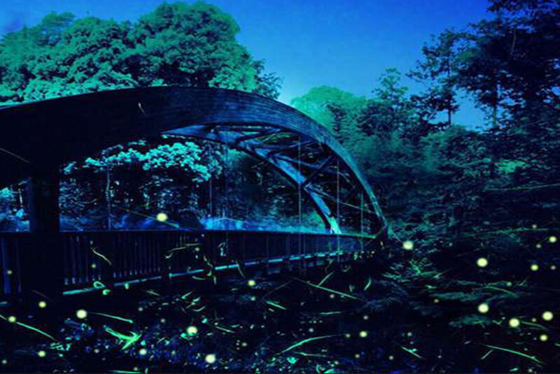

～ワサビの一大名産地で本場のわさび鍋を～
伊豆天城湯ヶ島温泉 白壁 (静岡)
天城湯ヶ島といえばわさびの名産地として有名である。
最近では海外でも、特に旨みと甘みのあるわさびとして最高級の評価をいただいている。
こちら白壁では、そのわさびをふんだんに使った「わさび鍋」という珍しい食事が並ぶ。
わさびをおいしくいただくために調理された夕飯は、日本酒との相性も抜群。
また伊豆という場所も相まって海産物も絶品。
風呂は地中より掘り出された重さ約53トンの溶岩をくりぬいて作られた日本一の「巨石露天風呂」。
部屋も館内もぬくもり優しく過ごしやすい。
さらに天城湯ヶ島はホタルの名所としても有名。
自然のめぐみを全身で受けてみるのはいかが？